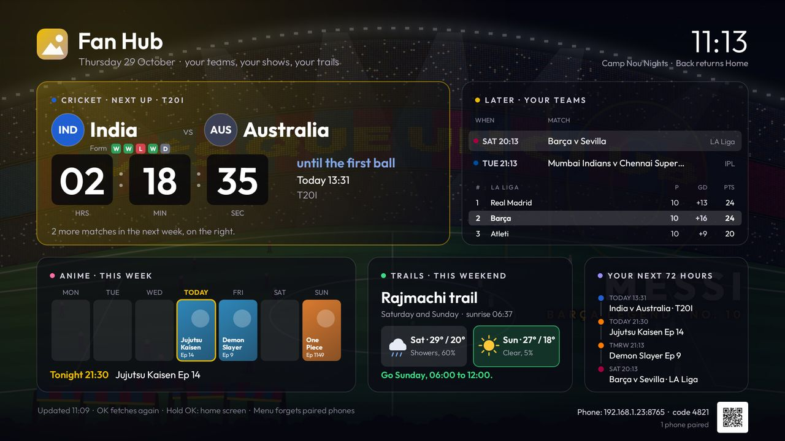
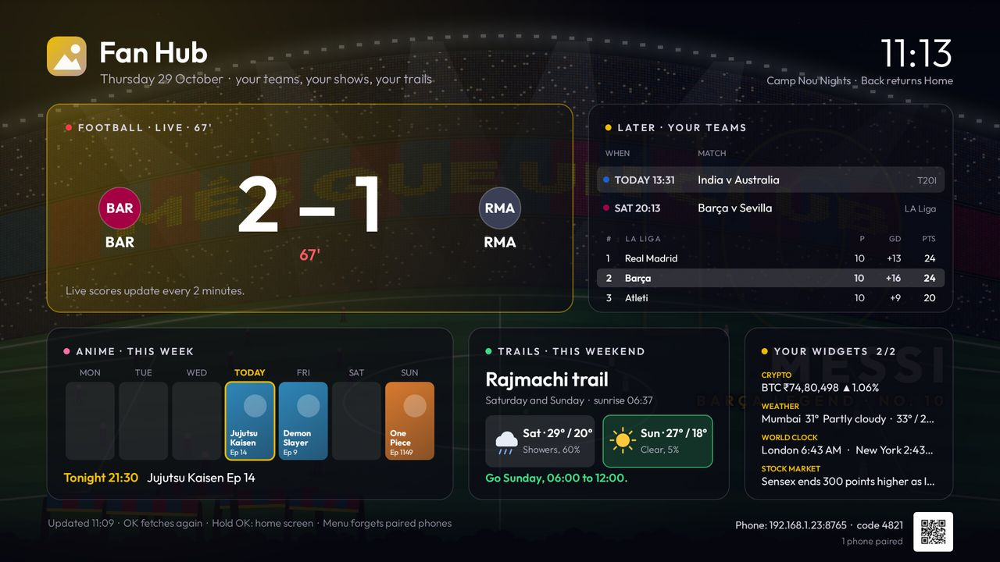
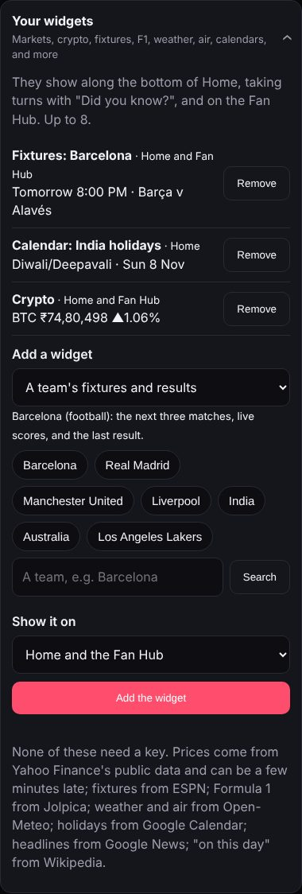

The Fan Hub is den-tv's second app. It fetches your teams' matches, your shows' episodes, the weekend's weather and your widgets, and Home shows them without ever going online itself. Open it from its tile on Home.


Your team's next match with a countdown, its last five results, and its place in the league with the teams either side.
Every team you follow, football and cricket, soonest first.
The week's episodes of your shows, with tonight's highlighted, from AniList.
Saturday and Sunday's forecast for a hike you pick, and which morning is better.
Matches and episodes over the next three days, in one list.
Prices, fixtures, weather and the rest, taking turns a page at a time.
On the TV remote: OK fetches everything again, holding OK opens home-screen setup and Speed up, and Menu forgets paired phones.
On the phone, Tweak › Fan Hub: one team or show per line, like Barcelona or India or One Piece. Football and cricket teams are found on TheSportsDB and shows on AniList; neither needs a key.
| Without keys | With the free keys |
|---|---|
| Fixtures, results, form, countdowns and episodes. The score arrives when the match ends. | The score every 2 minutes during play, GOAL! and fifty-run moments, and league tables. Get the keys. |
Up to 8, set up on the phone in Tweak › Your widgets. They show along the bottom of Home, taking turns with "Did you know?", and on the Fan Hub. None of them needs a key. Choose for each whether it shows on Home, the Fan Hub or both.
| Widget | Shows | Updates |
|---|---|---|
| Markets | Sensex, Nifty 50, Bank Nifty, S&P 500, gold, USD/INR, or any share or fund you search for: NIFTY 50 22,983 ▲0.20% | Every 5 min |
| Crypto | Bitcoin, Ether, Solana or any ticker, in ₹, $, €, £ or dirhams: BTC ₹74,80,498 ▲1.06% | Every 5 min |
| A team's fixtures | Football, cricket, basketball, American football, hockey or baseball: the next three matches, the live score, the last result | Every 10 min |
| Formula 1 | The next Grand Prix, in your time | Hourly |
| Weather | Now, with the day's high and low, for any town | Every 30 min |
| Air quality | AQI and PM2.5: Delhi air 176, unhealthy · PM2.5 98 | Every 30 min |
| World clocks | Up to four cities | Always |
| Countdown | Days to a date, or to a birthday every year | Always |
| Calendar | A country's holidays and festivals, or your own Google Calendar's next events | Hourly |
| Headlines | The top five on any topic | Every 30 min |
| On this day | Three things that happened on today's date | Daily |
| Note | A line of your own | Always |
The address stays on the TV and is never shown on the phone again. Anyone who sees the TV sees your next events, so pick Fan Hub only if Home is too public.

Prices come from Yahoo Finance's public data and can be a few minutes late; fixtures from ESPN's public scoreboards. Neither is an official service, so either could change.